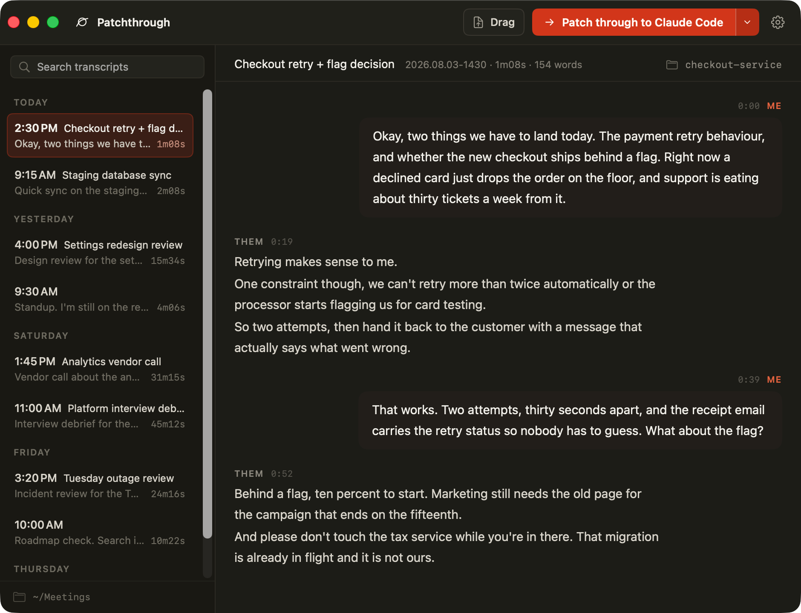

Patchthrough records your microphone and the other side of the call as two separate tracks. It transcribes the recording on your Mac. Then it patches the transcript through to your coding agent, ready in the repository that you discussed.
macOS app available now · Windows recorder in hardware validation · cross-platform CLI
Patchthrough records the other side of the call. Tell the people in the meeting that you are recording. Local law may require their consent.

The recorders are native to each operating system, while every session uses the same transcript contract. Nothing is being called released before it works on real hardware.
Record your microphone and system audio as separate tracks, transcribe fully on-device, and patch the transcript directly into your agent.
Download for macOS →Microphone capture, WASAPI loopback, local Parakeet and Whisper transcription, and the shared session format are implemented. Real devices, codecs, model runtimes, and recovery paths are being tested before an installer is published.
Follow Windows progress →Install the transcript client on macOS, Windows, or Linux. Hand files to terminal agents everywhere, with browser handoffs on macOS and Windows.
Install the CLI →Start the recording from the menu bar. Patchthrough records your microphone and all the audio that the Mac plays as two separate tracks. The speech model gets clean single-source audio, and you get me/them speaker labels. "All the audio" is literal: notification sounds and music land in the transcript too.
Click Stop. The transcription starts automatically. Parakeet TDT runs on the Neural Engine through Core ML. One hour of audio takes approximately 20 seconds, fully on your Mac. Parakeet transcribes English only.
In the menu bar, click Patch through to Claude Code, or to a different
destination that Patchthrough finds on your Mac. A terminal opens in your
repository with the agent running and the transcript in context. You
can also use the command line: patchthrough hand claude.
One click takes you from "we agreed on it in the meeting" to "an agent is implementing it".
The agent gets the full transcript, not a summary. A summary can lose requirements. The agent also gets a prompt. The prompt tells the agent to find work items, decisions, and open questions. It tells the agent to ask when a term is not clear. And it tells the agent not to change code until you agree on the plan.
The transcript goes in the .meeting/ directory in your
repository. Patchthrough adds that directory to the local git excludes
of the repository. Meeting content cannot go into a commit by accident.
Patchthrough does not change your .gitignore.
The macOS app finds what is installed on your Mac and groups it the way you think about it. It puts the destinations that you use most at the top of the list.
The transcript stages in the repository you pick, and the agent starts with a prompt pointing at it.
VS Code opens its chat command with the transcript as context. Cursor gets a link. The chat apps open with the transcript ready to attach.
Patchthrough opens a new chat in your browser and attaches the transcript. For Microsoft this is the only way to attach a file at all.
The handoff works the same way everywhere: Patchthrough puts the transcript on your clipboard as a file and pastes it in as an attachment, so the agent gets a document rather than a wall of pasted text. You can also drag that file from the Patchthrough window into any chat input, including apps that Patchthrough has never heard of. One caveat worth knowing: Microsoft copies a file you attach into your work OneDrive, so Patchthrough asks before that handoff, and every other destination keeps the transcript on your Mac.
Your own tools count too. Point Patchthrough at any web app with a chat box and it appears under Custom, on your machine only, through one entry in the config file.
The transcripts of your meetings are sensitive data. Patchthrough pins and verifies its supply chain.
Audio and transcripts stay on your computer. The only download is the transcription models, one time.
Patchthrough has no server of its own, so a transcript reaches exactly the destination you pick and nothing else. Every destination keeps the file on your computer, with one exception: Microsoft copies a file you attach into your work OneDrive, and Patchthrough asks you first.
There is no account to sign in to and no server to breach. Sessions
are plain files in ~/Recordings/. You own your data.
Patchthrough pins native dependencies to exact versions. Verification scripts stop the build if a dependency or a model changes. No version range can pull new code into a binary that has microphone access.
The macOS app comes from GitHub Releases. The npm package is a plain JavaScript transcript client with no install scripts or native downloads.
Open the disk image and drag Patchthrough into Applications. Releases are signed and notarized, hosted on GitHub Releases. Patchthrough is open source and not distributed through the Mac App Store. Launch at login is available in Settings.
The npm package handles transcripts, terminal agents, and the web destinations. It has no install scripts and never downloads the native app. It can read sessions from the app. It also accepts any transcript file, or text piped in from another command.
The Windows recorder is not a public download yet. It remains in hardware validation until microphone and loopback capture, codecs, model inference, device changes, and recoverable failures pass on a physical Windows machine. See the acceptance checklist →
Patchthrough requires macOS 15 or later and Apple
Silicon. The transcription models (approximately 600 MB) download one
time, on the first use. Record a short test while you are online before
your first meeting. To build the app yourself, clone the repository and
run ./packaging/make-app.sh.